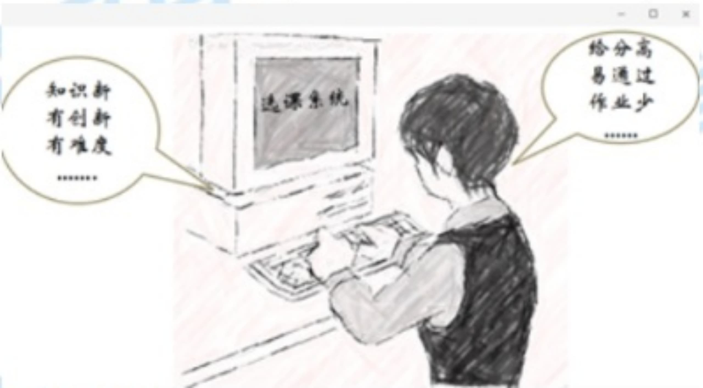

*2018年全国硕士研究生入学统一考试英语(一)真题*
*Section I Use of English*
*Directions:*
Read the following text. Choose the best word (s) for each numbered blank and mark A, B, C or D on the *ANSWER SHEET.* (10 points)
Trust is a tricky business. On the one hand, it’s a necessary condition 1 many worthwhile things: child care, friendships, etc. On the other hand, putting your 2, in the wrong place often carries a high 3.
4, why do we trust at all? Well, because it feels good. 5 people place their trust in an individual or an institution, their brains release oxytocin, a hormone that 6 pleasurable feelings and triggers the herding instruct that prompts humans to 7 with one another. Scientists have found that exposure 8 this hormone puts us in a trusting 9: In a Swiss study, researchers sprayed oxytocin into the noses of half the subjects; those subjects were ready to lend significantly higher amounts of money to strangers than were their 10 who inhaled something else.
11 for us, we also have a sixth sense for dishonesty that may 12 us. A Canadian study found that children as young as 14 months can differentiate 13 a credible person and a dishonest one. Sixty toddlers were each 14 to an adult tester holding a plastic container. The tester would ask, “What’s in here?” before looking into the container, smiling, and exclaiming, “Wow!” Each subject was then invited to look 15. Half of them found a toy; the other half 16 the container was empty-and realized the tester had 17 them.
Among the children who had not been tricked, the majority were 18 to cooperate with the tester in learning a new skill, demonstrating that they trusted his leadership. 19, only five of the 30 children paired with the “20”tester participated in a follow-up activity.
1. [A] on [B] like [C] for [D] from
2. [A] faith [B] concern [C] attention [D] interest
3. [A] benefit [B] debt [C] hope [D] price
4. [A] Therefore [B] Then [C] Instead [D] Again
5. [A]Until [B] Unless [C] Although [D] When
6. [A] selects [B] produces [C] applies [D] maintains
7. [A] consult [B] compete [C] connect [D] compare
8. [A] at [B] by [C]of [D]to
9. [A] context [B] mood [C] period [D] circle
10.[A] counterparts [B] substitutes [C] colleagues [D]supporters
11.[A] Funny [B] Lucky [C] Odd [D] Ironic
12.[A] monitor [B] protect [C] surprise [D] delight
13.[A] between [B] within [C] toward [D] over
14.[A] transferred [B] added [C] introduced [D] entrusted
15.[A] out [B] back [C] around [D] inside
16.[A] discovered [B] proved [C] insisted [D] .remembered
17.[A] betrayed [B]wronged [C] fooled [D] mocked
18.[A] forced [B] willing [C] hesitant [D] entitled
19.[A] In contrast [B] As a result [C] On the whole [D] For instance
20.[A] inflexible [B] incapable [C] unreliable [D] unsuitable
*Section II Reading Comprehension*
*Part A*
*Directions:*
Read the following four texts. Answer the questions below each text by choosing A, B, C or D. Mark your answers on the *ANSWER SHEET.* (40 points)
*Text 1*
Among the annoying challenges facing the middle class is one that will probably go unmentioned in the next presidential campaign: What happens when the robots come for their jobs?
Don’t dismiss that possibility entirely. About half of U.S. jobs are at high risk of being automated, according to a University of Oxford study, with the middle class disproportionately squeezed. Lower-income jobs like gardening or day care don’t appeal to robots. But many middle-class occupations-trucking, financial advice, software engineering — have aroused their interest, or soon will. The rich own the robots, so they will be fine.
This isn’t to be alarmist. Optimists point out that technological upheaval has benefited workers in the past. The Industrial Revolution didn’t go so well for Luddites whose jobs were displaced by mechanized looms, but it eventually raised living standards and created more jobs than it destroyed. Likewise, automation should eventually boost productivity, stimulate demand by driving down prices, and free workers from hard, boring work. But in the medium term, middle-class workers may need a lot of help adjusting.
The first step, as Erik Brynjolfsson and Andrew McAfee argue in The Second Machine Age, should be rethinking education and job training. Curriculums —from grammar school to college- should evolve to focus less on memorizing facts and more on creativity and complex communication. Vocational schools should do a better job of fostering problem-solving skills and helping students work alongside robots. Online education can supplement the traditional kind. It could make extra training and instruction affordable. Professionals trying to acquire new skills will be able to do so without going into debt.
The challenge of coping with automation underlines the need for the U.S. to revive its fading business dynamism: Starting new companies must be made easier. In previous eras of drastic technological change, entrepreneurs smoothed the transition by dreaming up ways to combine labor and machines. The best uses of 3D printers and virtual reality haven’t been invented yet. The U.S. needs the new companies that will invent them.
Finally, because automation threatens to widen the gap between capital income and labor income, taxes and the safety net will have to be rethought. Taxes on low-wage labor need to be cut, and wage subsidies such as the earned income tax credit should be expanded: This would boost incomes, encourage work, reward companies for job creation, and reduce inequality.
Technology will improve society in ways big and small over the next few years, yet this will be little comfort to those who find their lives and careers upended by automation. Destroying the machines that are coming for our jobs would be nuts. But policies to help workers adapt will be indispensable.
21.Who will be most threatened by automation?
[A] Leading politicians.
[B]Low-wage laborers.
[C]Robot owners.
[D]Middle-class workers.
22 .Which of the following best represent the author’s view?
[A] Worries about automation are in fact groundless.
[B]Optimists’ opinions on new tech find little support.
[C]Issues arising from automation need to be tackled
[D]Negative consequences of new tech can be avoided
23.Education in the age of automation should put more emphasis on
[A] creative potential. [B]job-hunting skills.
[C]individual needs. [D]cooperative spirit.
24.The author suggests that tax policies be aimed at
[A]encouraging the development of automation.
[B]increasing the return on capital investment.
[C]easing the hostility between rich and poor.
[D]preventing the income gap from widening.
25.In this text, the author presents a problem with
[A] opposing views on it. [B]possible solutions to it.
[C]its alarming impacts. [D]its major variations.
*Text 2*
A new survey by Harvard University finds more than two-thirds of young Americans disapprove of President Trump’s use of Twitter. The implication is that Millennials prefer news from the White House to be filtered through other source, Not a president’s social media platform.
Most Americans rely on social media to check daily headlines. Yet as distrust has risen toward all media, people may be starting to beef up their media literacy skills. Such a trend is badly needed. During the 2016 presidential campaign, nearly a quarter of web content shared by Twitter users in the politically critical state of Michigan was fake news, according to the University of Oxford. And a survey conducted for BuzzFeed News found 44 percent of Facebook users rarely or never trust news from the media giant.
Young people who are digital natives are indeed becoming more skillful at separating fact from fiction in cyberspace. A Knight Foundation focus-group survey of young people between ages 14and24 found they use “distributed trust” to verify stories. They cross-check sources and prefer news from different perspectives—especially those that are open about any bias. “Many young people assume a great deal of personal responsibility for educating themselves and actively seeking out opposing viewpoints,” the survey concluded.
Such active research can have another effect. A 2014 survey conducted in Australia, Britain, and the United States by the University of Wisconsin-Madison found that young people’s reliance on social media led to greater political engagement.
Social media allows users to experience news events more intimately and immediately while also permitting them to re-share news as a projection of their values and interests. This forces users to be more conscious of their role in passing along information. A survey by Barna research group found the top reason given by Americans for the fake news phenomenon is “reader error,” more so than made-up stories or factual mistakes in reporting. About a third say the problem of fake news lies in “misinterpretation or exaggeration of actual news” via social media. In other words, the choice to share news on social media may be the heart of the issue. “This indicates there is a real personal responsibility in counteracting this problem,” says Roxanne Stone, editor in chief at Barna Group.
So when young people are critical of an over-tweeting president, they reveal a mental discipline in thinking skills – and in their choices on when to share on social media.
26. According to the Paragraphs 1 and 2, many young Americans cast doubts on
[A] the justification of the news-filtering practice.
[B] people’s preference for social media platforms.
[C] the administrations ability to handle information.
[D] social media was a reliable source of news.
27. The phrase “beer up”(Line 2, Para. 2) is closest in meaning to
[A] sharpen [B] define [C] boast [D] share
28. According to the knight foundation survey, young people
[A] tend to voice their opinions in cyberspace.
[B] verify news by referring to diverse resources.
[C] have s strong sense of responsibility.
[D] like to exchange views on “distributed trust”
29. The Barna survey found that a main cause for the fake news problem is
[A] readers outdated values.
[B] journalists’ biased reporting
[C] readers’ misinterpretation
[D] journalists’ made-up stories.
30. Which of the following would be the best title for the text?
[A] A Rise in Critical Skills for Sharing News Online
[B] A Counteraction Against the Over-tweeting Trend
[C] The Accumulation of Mutual Trust on Social Media.
[D] The Platforms for Projection of Personal Interests.
*Text 3*
Any fair-minded assessment of the dangers of the deal between Britain’s National Health Service (NHS) and DeepMind must start by acknowledging that both sides mean well. DeepMind is one of the leading artificial intelligence (AI) companies in the world. The potential of this work applied to healthcare is very great, but it could also lead to further concentration of power in the tech giants. It Is against that background that the information commissioner, Elizabeth Denham, has issued her damning verdict against the Royal Free hospital trust under the NHS, which handed over to DeepMind the records of 1.6 million patients In 2015 on the basis of a vague agreement which took far too little account of the patients’ rights and their expectations of privacy.
DeepMind has almost apologized. The NHS trust has mended its ways. Further arrangements- and there may be many-between the NHS and DeepMind will be carefully scrutinised to ensure that all necessary permissions have been asked of patients and all unnecessary data has been cleaned. There are lessons about informed patient consent to learn. But privacy is not the only angle in this case and not even the most important. Ms Denham chose to concentrate the blame on the NHS trust, since under existing law it “controlled” the data and DeepMind merely “processed" it. But this distinction misses the point that it is processing and aggregation, not the mere possession of bits, that gives the data value.
The great question is who should benefit from the analysis of all the data that our lives now generate. Privacy law builds on the concept of damage to an individual from identifiable knowledge about them. That misses the way the surveillance economy works. The data of an individual there gains its value only when it is compared with the data of countless millions more.
The use of privacy law to curb the tech giants in this instance feels slightly maladapted. This practice does not address the real worry. It is not enough to say that the algorithms DeepMind develops will benefit patients and save lives. What matters is that they will belong to a private monopoly which developed them using public resources. If software promises to save lives on the scale that dugs now can, big data may be expected to behave as a big pharm has done. We are still at the beginning of this revolution and small choices now may turn out to have gigantic consequences later. A long struggle will be needed to avoid a future of digital feudalism. Ms Denham’s report is a welcome start.
31.Wha is true of the agreement between the NHS and DeepMind ?
[A] It caused conflicts among tech giants.
[B] It failed to pay due attention to patient’s rights.
[C] It fell short of the latter’s expectations
[D] It put both sides into a dangerous situation.
32. The NHS trust responded to Denham’s verdict with
[A] empty promises.
[B] tough resistance.
[C] necessary adjustments.
[D] sincere apologies.
33.The author argues in Paragraph 2 that
[A] privacy protection must be secured at all costs.
[B] leaking patients’ data is worse than selling it.
[C] making profits from patients’ data is illegal.
[D] the value of data comes from the processing of it
34.According to the last paragraph, the real worry arising from this deal is
[A] the vicious rivalry among big pharmas.
[B] the ineffective enforcement of privacy law.
[C] the uncontrolled use of new software.
[D] the monopoly of big data by tech giants.
35.The author’s attitude toward the application of AI to healthcare is
[A] ambiguous. [B] cautious.
[C] appreciative. [D] contemptuous.
*Text 4*
The U.S. Postal Service (USPS) continues to bleed red ink. It reported a net loss of $5.6 billion for fiscal 2016, the 10th straight year its expenses have exceeded revenue. Meanwhile, it has more than $120 billion in unfunded liabilities, mostly for employee health and retirement costs. There are many bankruptcies. Fundamentally, the USPS is in a historic squeeze between technological change that has permanently decreased demand for its bread-and-butter product, first-class mail, and a regulatory structure that denies management the flexibility to adjust its operations to the new reality
And interest groups ranging from postal unions to greeting-card makers exert self-interested pressure on the USPS’s ultimate overseer-Congress-insisting that whatever else happens to the Postal Service, aspects of the status quo they depend on get protected. This is why repeated attempts at reform legislation have failed in recent years, leaving the Postal Service unable to pay its bills except by deferring vital modernization.
Now comes word that everyone involved—Democrats, Republicans, the Postal Service, the unions and the system’s heaviest users—has finally agreed on a plan to fix the system. Legislation is moving through the House that would save USPS an estimated $28.6 billion over five years, which could help pay for new vehicles, among other survival measures. Most of the money would come from a penny-per-letter permanent rate increase and from shifting postal retirees into Medicare. The latter step would largely offset the financial burden of annually pre-funding retiree health care, thus addressing a long-standing complaint by the USPS and its union.
If it clears the House, this measure would still have to get through the Senate – where someone is bound to point out that it amounts to the bare, bare minimum necessary to keep the Postal Service afloat, not comprehensive reform. There’s no change to collective bargaining at the USPS, a major omission considering that personnel accounts for 80 percent of the agency’s costs. Also missing is any discussion of eliminating Saturday letter delivery. That common-sense change enjoys wide public support and would save the USPS $2 billion per year. But postal special-interest groups seem to have killed it, at least in the House. The emerging consensus around the bill is a sign that legislators are getting frightened about a politically embarrassing short-term collapse at the USPS. It is not, however, a sign that they’re getting serious about transforming the postal system for the 21st century.
36.The financial problem with the USPS is caused partly by
[A]. its unbalanced budget.
[B] .its rigid management.
[C] .the cost for technical upgrading.
[D]. the withdrawal of bank support.
37. According to Paragraph 2, the USPS fails to modernize itself due to
[A]. the interference from interest groups.
[B] .the inadequate funding from Congress.
[C] .the shrinking demand for postal service.
[D] .the incompetence of postal unions.
38.The long-standing complaint by the USPS and its unions can be addressed by
[A] .removing its burden of retiree health care.
[B] .making more investment in new vehicles.
[C] .adopting a new rate-increase mechanism.
[D]. attracting more first-class mail users.
39.In the last paragraph, the author seems to view legislators with
[A] respect. [B] tolerance.
[C] discontent. [D] gratitude.
40.Which of the following would be the best title for the text?
[A] .The USPS Starts to Miss Its Good Old Days
[B] .The Postal Service: Keep Away from My Cheese
[C] .The USPS: Chronic Illness Requires a Quick Cure
[D] .The Postal Service Needs More than a Band-Aid
*Part B*
*Directions:*
The following paragraphs are given in a wrong order. For Questions 41-45, you are required to reorganize these paragraphs into a coherent article by choosing from the list A-G and filling them into the numbered boxes. *Paragraphs C and F* have been correctly placed. Mark your answers on *ANSWER SHEET*. (10 points)
A. In December of 1869, Congress appointed a commission to select a site and prepare plans and cost estimates for a new State Department Building. The commission was also to consider possible arrangements for the War and Navy Departments. To the horror of some who expected a Greek Revival twin of the Treasury Building to be erected on the other side of the White House, the elaborate French Second Empire style design by Alfred Mullett was selected, and construction of a building to house all three departments began in June of 1871.
B. Completed in 1875, the State Department’s south wing was the first to be occupied, with its elegant four-story library (completed in 1876), Diplomatic Reception Room, and Secretary’s office decorated with carved wood, Oriental rugs, and stenciled wall patterns. The Navy Department moved into the east wing in 1879, where elaborate wall and ceiling stenciling and marquetry floors decorated the office of the Secretary.
C. The State, War, and Navy Building, as it was originally known, housed the three Executive Branch Departments most intimately associated with formulating and conducting the nation’s foreign policy in the last quarter of the nineteenth century and the first quarter of the twentieth century-the period when the United States emerged as an international power. The building has housed some of the nation’s most significant diplomats and politicians and has been the scene of many historic events.
D. Many of the most celebrated national figures have participated in historical events that have taken place within the EEOB’s granite walls. Theodore and Franklin D. Roosevelt, William Howard Taft, Dwight D. Eisenhower, Lyndon B. Johnson, Gerald Ford, and George H. W. Bush all had offices in this building before becoming president. It has housed 16 Secretaries of the Navy, 21 Secretaries of War, and 24 Secretaries of State. Winston Churchill once walked its corridors and Japanese emissaries met here with Secretary of State Cordell Hull after the bombing of Pearl Harbor.
E. The Eisenhower Executive Office Building (EEOB) commands a unique position in both the national history and the architectural heritage of the United States. Designed by Supervising Architect of the Treasury, Alfred B. Mullett, it was built from 1871 to 1888 to house the growing staffs of the State, War, and Navy Departments, and is considered one of the best examples of French Second Empire architecture in the country.
F. Construction took 17 years as the building slowly rose wing by wing. When the EEOB was finished, it was the largest office building in Washington, with nearly 2 miles of black and white tiled corridors. Almost all of the interior detail is of cast iron or plaster; the use of wood was minimized to insure fire safety. Eight monumental curving staircases of granite with over 4,000 individually cast bronze balusters are capped by four skylight domes and two stained glass rotundas.
G. The history of the EEOB began long before its foundations were laid. The first executive offices were constructed between 1799 and 1820. A series of fires (including those set by the British in 1814) and overcrowded conditions led to the construction of the existing Treasury Building. In 1866, the construction of the North Wing of the Treasury Building necessitated the demolition of the State Department building.
\41. →C→ 42. → 43. → F→ 44. →45.
*Part C*
*Directions:*
Read the following text carefully and then translate the underlined segments into Chinese. Your translation should be written neatly on the *ANSWER SHEET*. (10 points)
Shakespeare’s life time was coincident with a period of extraordinary activity and achievement in the drama. By the date of his birth Europe was witnessing the passing of the religious drama, and the creation of new forms under the incentive of classical tragedy and comedy. These new forms were at first mainly written by scholars and performed by amateurs, but in England, as everywhere else in western Europe, the growth of a class of professional actors was threatening to make the drama popular, whether it should be new or old, classical or medieval, literary or farcical. Court, school organizations of amateurs, and the traveling actors were all rivals in supplying a widespread desire for dramatic entertainment; and (47) no boy who went a grammar school could be ignorant that the drama was a form of literature which gave glory to Greece and Rome and might yet bring honor to England.
When Shakespeare was twelve years old, the first public playhouse was built in London. For a time literature showed no interest in this public stage. Plays aiming at literary distinction were written for school or court, or for the choir boys of St. Paul’s and the royal chapel, who, however, gave plays in public as well as at court.(48)but the professional companies prospered in their permanent theaters, and university men with literature ambitions were quick to turn to these theaters as offering a means of livelihood. By the time Shakespeare was twenty-five, Lyly, Peele, and Greene had made comedies that were at once popular and literary; Kyd had written a tragedy that crowded the pit; and Marlowe had brought poetry and genius to triumph on the common stage - where they had played no part since the death of Euripides. (49)A native literary drama had been created, its alliance with the public playhouses established, and at least some of its great traditions had been begun.
The development of the Elizabethan drama for the next twenty-five years is of exceptional interest to students of literary history, for in this brief period we may trace the beginning, growth, blossoming, and decay of many kinds of plays, and of many great careers. We are amazed today at the mere number of plays produced, as well as by the number of dramatists writing at the same time for this London of two hundred thousand inhabitants. (50)To realize how great was the dramatic activity, we must remember further that hosts of plays have been lost, and that probably there is no author of note whose entire work has survived.
*Section III Writing*
*Part A*
*51. Directions*：
Write an email to all international experts on campus inviting them to attend the graduation ceremony. In your email you should include time, place and other relevant information about the ceremony.
You should write about 100 words neatly on the *ANSEWER SHEET*
*Do not* use your own name at the end of the email. Use “Li Ming” instead. (10 points)
*Part B*
*52. Directions：*
*Write an essay of 160-200 words based on the picture below. In your essay, you should*
*1)describe the pictures briefly*
*2)interpret the meaning and*
*3)give your comments**(20 points)*
You should write neatly on the *ANSWER SHEET*. (20 points )
